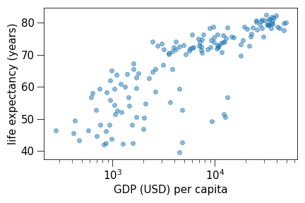

Customizing plots¶
Objectives
Know where to look to find out how to tweak plots
Be able to prepare a plot for publication
Know how to tweak example plots from a gallery for your own purpose
Instructor note
10 min discussion
15 min exercise where we adapt a Matplotlib script
15 min exercise where we try to adapt a gallery example
10 min discussion, Q&A
[this lesson is adapted from https://aaltoscicomp.github.io/python-for-scicomp/data-visualization/]
Prefer scripting over manual customization¶
Do not customize “manually” using a graphical program (not easily repeatable/reproducible).
No manual post-processing. This will bite you when you need to regenerate 50 figures one day before submission deadline or regenerate a set of figures after the person who created them left the group.
Styling and customizing plots¶
Matplotlib and also all the other libraries allow to customize almost every aspect of a plot.
It is useful to study Matplotlib parts of a figure so that we know what to search for to customize things.
You can also select among pre-defined themes/ style sheets, for instance:
plt.style.use('ggplot')
Exercises¶
Here are 3 exercises where we try to adapt existing scripts to either tweak how the plot looks (exercises 1 and 2) or to modify the input data (example 3).
This is very close to real life: there are so many options and possibilities and it is almost impossible to remember everything so this strategy is useful to practice:
select an example that is close to what you have in mind
being able to adapt it to your needs
being able to search for help
being able to understand help request answers (not easy)
Exercise Customization-1: log scale in Matplotlib (15 min)
In this exercise we will learn how to use log scales.
To demonstrate this we first fetch some data to plot:
import pandas as pd url = "https://raw.githubusercontent.com/plotly/datasets/master/gapminder_with_codes.csv" data = pd.read_csv(url) data_2007 = data[data["year"] == 2007] data_2007
Try the above snippet in a notebook and it will give you an overview over the data.
Then we can plot the data, first using a linear scale:
import matplotlib.pyplot as plt fig, ax = plt.subplots() ax.scatter(x=data_2007["gdpPercap"], y=data_2007["lifeExp"], alpha=0.5) ax.set_xlabel("GDP (USD) per capita") ax.set_ylabel("life expectancy (years)")
This is the result but we realize that a linear scale is not ideal here:

Your task is to switch to a log scale and arrive at this result:

What does
alpha=0.5do?
Solution
fig, ax = plt.subplots()
ax.scatter(x=data_2007["gdpPercap"], y=data_2007["lifeExp"], alpha=0.5)
ax.set_xscale("log")
ax.set_xlabel("GDP (USD) per capita")
ax.set_ylabel("life expectancy (years)")
Exercise Customization-2: preparing a plot for publication (15 min)
Often we need to create figures for presentation slides and for publications but both have different requirements: for presentation slides you have the whole screen but for a figure in a publication you may only have few centimeters/inches.
For figures that go to print it is good practice to look at them at the size they will be printed in and then often fonts and tickmarks are too small.
Your task is to make the tickmarks and the axis label font larger, using Matplotlib parts of a figure and web search, and to arrive at this:

Solution
fig, ax = plt.subplots()
ax.scatter(x=data_2007["gdpPercap"], y=data_2007["lifeExp"], alpha=0.5)
ax.set_xscale("log")
ax.set_xlabel("GDP (USD) per capita", fontsize=15)
ax.set_ylabel("life expectancy (years)", fontsize=15)
ax.tick_params(which="major", length=10)
ax.tick_params(which="minor", length=5)
ax.tick_params(labelsize=15)
ax.tick_params(labelsize=15)
Exercise Customization-3: adapting a gallery example
This is a great exercise which is very close to real life.
Your task is to select one visualization library (some need to be installed first - in doubt choose Matplotlib or Seaborn since they are part of Anaconda installation):
Matplotlib: probably the most standard and most widely used
Seaborn: high-level interface to Matplotlib, statistical functions built in
Altair: declarative visualization (R users will be more at home), statistics built in
Plotly: interactive graphs
Bokeh: also here good for interactivity
plotnine: implementation of a grammar of graphics in Python, it is based on ggplot2
ggplot: R users will be more at home
PyNGL: used in the weather forecast community
K3D: Jupyter notebook extension for 3D visualization
Browse the various example galleries (links above).
Select one example that is close to your recent visualization project or simply interests you.
First try to reproduce this example in the Jupyter notebook.
Then try to print out the data that is used in this example just before the call of the plotting function to learn about its structure. Is it a pandas dataframe? Is it a NumPy array? Is it a dictionary? A list? a list of lists?
Then try to modify the data a bit.
If you have time, try to feed it different, simplified data. This will be key for adapting the examples to your projects.
Example “solution” for such an exploration below.
An example exploration
Let us imagine we were browsing https://seaborn.pydata.org/examples/index.html
And this example plot caught our eye: https://seaborn.pydata.org/examples/simple_violinplots.html
Try to run it in the notebook.
The
dseems to be the data. Right before the call tosns.violinplot, add aprint(d):import numpy as np import seaborn as sns sns.set_theme() # Create a random dataset across several variables rs = np.random.default_rng(0) n, p = 40, 8 d = rs.normal(0, 2, (n, p)) d += np.log(np.arange(1, p + 1)) * -5 + 10 print(d) # Show each distribution with both violins and points sns.violinplot(data=d, palette="light:g", inner="points", orient="h")
The print reveals that
dis a NumPy array and looks like a two-dimensional list:[[10.25146044 6.27005437 5.78778386 3.27832843 0.88147169 1.76439276 2.87844934 1.49695422] [ 8.59252953 4.00342116 3.26038963 3.15118015 -2.69725111 0.60361933 -2.22137264 -1.86174242] ... many more lines ... [12.45950762 4.32352988 6.56724895 3.42215312 0.34419915 0.46123886 -1.56953795 0.95292133]]
Now let’s try with a much simplified two-dimensional list:
# import numpy as np import seaborn as sns sns.set_theme() # # Create a random dataset across several variables # rs = np.random.default_rng(0) # n, p = 40, 8 # d = rs.normal(0, 2, (n, p)) # d += np.log(np.arange(1, p + 1)) * -5 + 10 d = [[1.0, 2.0, 2.0, 3.0, 3.0, 3.0], [1.0, 1.0, 1.0, 2.0, 2.0, 3.0]] # Show each distribution with both violins and points sns.violinplot(data=d, palette="light:g", inner="points", orient="h")
Seems to work! And finally we arrive at a working example with our own data with all the “clutter” removed:
import seaborn as sns # l1 and l2 are note great names but they will do for a quick test l1 = [1.0, 2.0, 2.0, 3.0, 3.0, 3.0] l2 = [1.0, 1.0, 1.0, 2.0, 2.0, 3.0] sns.violinplot(data=[l1, l2], palette="light:g", inner="points", orient="h")
And now we can focus the rest of our work to read our real data.
Finally we can customize the plot.
Discussion
After the exercises, the group can discuss their findings and it is important to clarify questions at this point before moving on.